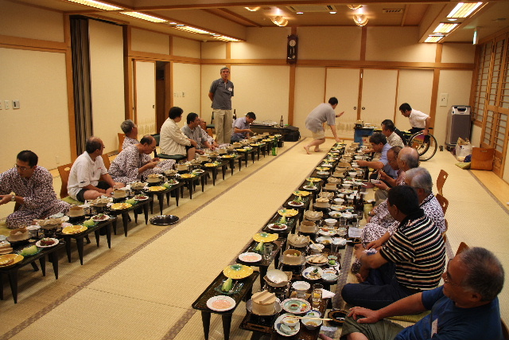
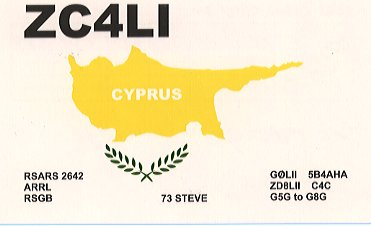

Flash ! DX


|
|
|
|
|
|
|
[Back Issues Sep.2013]
TIME:UTC(JST-09:00)
Report from JA1RJU(PM95sq)
30.Sep.2013(15:00b)
Report from JA1RJU(PM95sq)
29.Sep.2013(15:00d)
KH9/WA2YUN/b 08:37- 50.014 CW Beacon
V73SIX/b 08:44- 50.013.5 CW Beacon
V73NS 08:49 50.107 CW weak
V73NS 09:25 50.110 CW NW QSY CQ
V73NS 09:36 50.110 CW @ RST559
V73NS 09:48 50.110 CW CQing
FK8CP 09:52 50.110 CW CQ CQ on V73NS QRM!
Report from JA1RJU(PM95sq)
28.Sep.2013(15:00c)
VK4RHT/b 10:30- 50.281 CW Beacon
VK6RSX/b 10:30- 50.304 CW Beacon
3D2RA 09:45 50.108 CW Rotuma Is.
3D2RA 10:36 50.108 CW @ RST599
3D2RA 10:42 50.108 CW CQing
FK8CP 10:54 50.108 CW Calling 3D2
Report from JA1RJU(PM95sq)
27.Sep.2013(15:00c)
VK4WTN 04:58 50.105 CW CQ
VK4AHW 05:02 50.110 SSB CQ
VK6RSX/b 05:37- 50.304 CW Beacon
Report from JA1RJU(PM95sq)
26.Sep.2013(15:00c)
VK4RHT/b 10:20- 50.281 CW Beacon
VK6RSX/b 13:15- 50.304 CW Beacon
VK8VF/b 13:15- 50.310 CW Beacon
Report from JA1RJU(PM95sq)
25.Sep.2013(15:00f)
VK4WTN 05:33 50.105 CW CQ
VK4AHW 05:35 50.123 SSB CQ
VK4ZJB 05:35 50.110→137 SSB CQ HL/DS
VK4WM 05:37 50.100 CW CQ
FK8SIX/b 05:45- 50.080 CW(FSK) Beacon
V73SIX/b 05:45- 50.013.5 CW Beacon
FK8GX 06:10 50.1115 CW
VK4WTN 06:20 50.110→155 SSB CQ
VK4BG 06:22 50.110→136 SSB CQ
FK8GX 06:10 50.110 SSB CQ
FK8CP 06:36 50.110 CW CQing
V73SIX/b 06:45- 50.013.5 CW Beacon still good!
VK4EK 06:58 50.110→130 SSB CQ
VK4RTL/b 08:23- 50.282 CW Beacon
VK6RSX/b 08:23- 50.304 CW Beacon
VK4TVL/-? 08:30 50.295 -- -- S9
VK4RHT/b 11:35- 50.281 CW Beacon
VK6RSX/b 11:35- 50.304 CW Beacon
VK8VF/b 11:35- 50.310 CW Beacon
VK8MS 11:38 50.090 CW CQ
9M6ZAE 13:13 50.097 CW
DU7/PA0HIP 13:20 50.105 CW CQ
Report from JA1RJU(PM95sq)
24.Sep.2013(15:00d)
VK4WTN 05:24 50.106 CW wayne
VK4AHW 05:38 50.110 SSB CQ
VK4ZJB 05:40 50.110/137/120 SSB CQ
VK4BG 05:53 50.110 SSB CQ
DU7/PA0HIP 13:13 50.102 CW CQ & QRZ (looking for LP SA)
Report from JA1RJU(PM95sq)
23.Sep.2013(15:00d)
VK6RSX/b 07:42- 50.304 CW Beacon
VK4RTL/b 09:33- 50.282 CW Beacon
VK6RSX/b 09:35- 50.304 CW Beacon RST599
VK4RHT/b 09:55- 50.281 CW Beacon
Report from JA1RJU(PM95sq)
22.Sep.2013(15:00b)
VK3XDX 09:01- 50.110 CW CQ
Report from JA1RJU(PM95sq)
21.Sep.2013(15:00b)
Report from JA1RJU(PM95sq)
20.Sep.2013(15:00b)
Report from JA1RJU(PM95sq)
19.Sep.2013(15:00b)
Report from JA1RJU(PM95sq)
18.Sep.2013(15:00c)
FK8SIX/b 02:10- 50.080 CW Beacon weak!
Report from JA1RJU(PM95sq)
17.Sep.2013(15:00c)
VK4RHT/b 09:43- 50.281 CW Beacon
VK4RTL/b 09:43- 50.282 CW Beacon
VK6RSX/b 09:43- 50.304 CW Beacon weak!
Report from JA1RJU(PM95sq)
16.Sep.2013(15:00c)
VK6RSX/b 07:22- 50.304 CW Beacon
|
◎ 今年初めて本州に上陸した台風18号は、昼過ぎに関東地方を通過、東京都心部でも32.5mの最大瞬間風速を記録した。 小笠原諸島近海で発生した台風18号はそのまま北上、16日未明に愛知県豊橋付近から本州に上陸、東海、関東甲信を通過、 昼過ぎには北関東から福島、宮城県(仙台で30.7mを記録)に抜けた。 本州中央部を縦断するコースを取った今回の台風は千葉市で29.50m、埼玉県寄居市では33.1mの最大瞬間風速を記録し、 宮城県から太平洋に抜け、三陸沖から北海道根室市沖を通過、温帯低気圧となる模様。 "雨台風"の18号は、進路の西側にあたる滋賀県、京都府、福井県の1府2県に記録的な大雨を降らせ、河川の氾濫による大被害を与えた。 |
Report from JA1RJU(PM95sq)
15.Sep.2013(15:00c)
VK6RSX/b 06:15- 50.304 CW Beacon
VK6RSX/b 09:30- 50.304 CW Beacon
Report from JA1RJU(PM95sq)
14.Sep.2013(15:00b)
VK4RHT/b 09:55- 50.281 CW Beacon
VK4RTL/b 09:55- 50.282 CW Beacon
Report from JA1RJU(PM95sq)
13.Sep.2013(15:00c)
VK6RSX/b 09:25- 50.304 CW Beacon RST599 QSB
VK6RSX/b 12:10- 50.304 CW Beacon Evening Type TEP
Report from JA1RJU(PM95sq)
12.Sep.2013(15:00b)
Report from JA1RJU(PM95sq)
11.Sep.2013(15:00c)
VK4RHT/b 10:00- 50.281 CW Beacon
VK4RTL/b 10:50- 50.282 CW Beacon
Report from JA1RJU(PM95sq)
10.Sep.2013(15:00b)
VK6RSX/b 08:30- 50.304 CW Beacon RST599 QSB
Report from JA1RJU(PM95sq)
09.Sep.2013(15:00b)
Report from JA1RJU(PM95sq)
07-08.Sep.2013(15:00b)


◎ 6SG(東北 6m SSB GROUP) Meeting (青森県つがる市)
Report from JA1RJU(PM95sq)
06.Sep.2013(15:00b)
Report from JA1RJU(PM95sq)
05.Sep.2013(15:00b)
Report from JA1RJU(PM95sq)
04.Sep.2013(15:00c)
VK6RSX/b 07:35- 50.304 CW Beacon
Report from JA1RJU(PM95sq)
03.Sep.2013(15:00b)
Report from JA1RJU(PM95sq)
02.Sep.2013(15:00b)
● Sad News ●
It is with deep regret that I wish to inform you of the passing of
Mr.Steve Hodgson, ZC4LI on Saturday afternoon, 31st August. He was 69.
He had been ill for some time. Steve and I shared something of a common
background, we both worked for 'The Firm' in the 60s and 70s, as well as
being fellow hams.
He was an enthusiastic contest operator and had won many awards.
I'm sure his call will be sorely missed.
= Adrian, 5B4AIY =


U.K. Bases on CyprusからアクティブだったZC4LIがSK (De 5B4AIY)
Report from JA1RJU(PM95sq)
01.Sep.2013(15:00b)